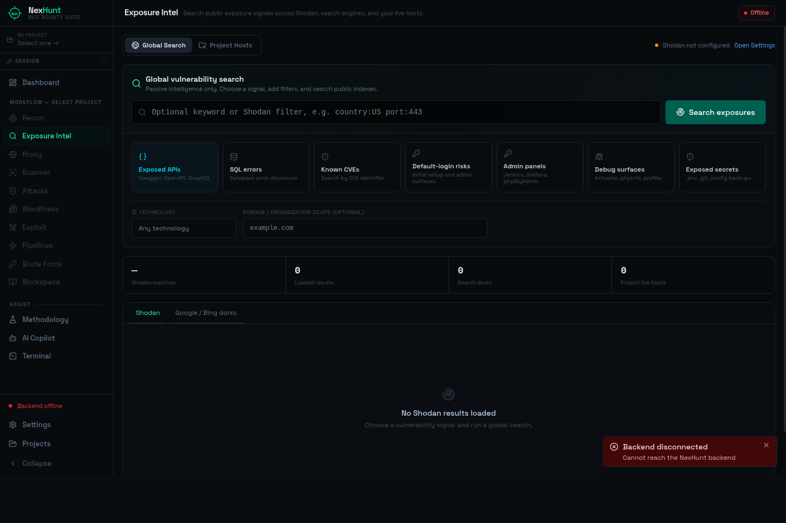

Si alguna vez arrancaste un bug bounty sabés cómo es: veinte terminales abiertas,
subfinder en una, httpx en otra, un nuclei corriendo
por acá, resultados en archivos .txt tirados por todos lados, y a la media hora
ya no te acordás qué target escaneaste ni con qué. Ese caos era mi día a día.
Con NexHunt quise resolver exactamente eso: una sola herramienta que cubriera todo el flujo —recon, escaneo, explotación, reporte— sin perder el hilo y sin reescribir los mismos comandos cada vez. No encontré ninguna que me convenciera, así que la construí.

Qué hace, en concreto
NexHunt encadena más de 20 herramientas del arsenal clásico —subfinder, amass, httpx, katana, nuclei, sqlmap, dalfox y varias más— y hace que la salida de una alimente automáticamente a la siguiente. Vos elegís el target y la app se encarga de mover los datos entre fases. El trabajo aburrido de copiar-pegar resultados de una tool a otra, desaparece.
El flujo está pensado en cinco etapas, tal como uno realmente ataca:
- Reconocimiento — enumeración de subdominios (pasiva y activa), probing de hosts vivos, escaneo de puertos, crawling web, URLs históricas y screenshots automáticas con gowitness.
- Escaneo de vulnerabilidades — Nuclei con más de 8.000 templates, correlación de CVEs contra la tecnología detectada y fuzzing de directorios.
- Explotación — SQLi con sqlmap, XSS con dalfox y xsstrike, command injection con commix, pruebas de SSRF/open redirect y una suite de ataques a JWT.
- Proxy & tráfico — interceptás, editás y reenviás requests, armás el sitemap y fuzzeás, sin salir de la app.
- Security tools — CORS mal configurado, bypass de 403, secretos filtrados en GitHub, buckets expuestos y auditores para GraphQL y APIs.

La parte que más me gustó resolver
Lo difícil de una tool así no es correr comandos —eso es un subprocess. Lo difícil
es que todo conviva sin romperse: 20+ binarios con dependencias distintas
(Python, Node, Go), instalados de una, corriendo en paralelo, con una interfaz que no se
congela mientras hay diez procesos escupiendo salida.
Trabajé mucho en el instalador de una sola línea: un script de bash que monta todo el arsenal y compila la app en Kali, Debian, Ubuntu, Arch y CachyOS. Que alguien pase de cero a "listo para cazar" en un comando era, para mí, casi tan importante como la app en sí.

Gratis de verdad, PRO opcional
Algo que me importaba: que el tier gratuito sea usable de verdad, no una demo recortada. La versión free trae la suite de recon completa, escaneo y explotación sobre un target, el proxy y la base de hallazgos, sin límite de tiempo ni funciones capadas a la mitad.
El PRO cuesta $20, pago único, para siempre —sin suscripción mensual. Suma el AI Copilot, los pipelines automáticos, escaneo masivo sobre todos los hosts, la suite de JWT, el Proxy Intruder y detección de buckets expuestos. Lo puse a ese precio a propósito: un solo bounty aceptado ya te lo paga.
Por qué lo pongo como mi proyecto estrella
Porque no es un script de fin de semana. Es un producto de punta a punta: pensé la arquitectura, escribí la app, armé el instalador, diseñé la interfaz, redacté la documentación y hasta monté la tienda para venderlo. Me obligó a ser prolijo con cosas que en un CTF podés ignorar —manejo de errores, experiencia de usuario, empaquetado, soporte.
Es también la mejor muestra de cómo trabajo: entiendo el problema desde adentro porque soy el usuario, y lo llevo hasta algo que otra gente efectivamente usa a diario.